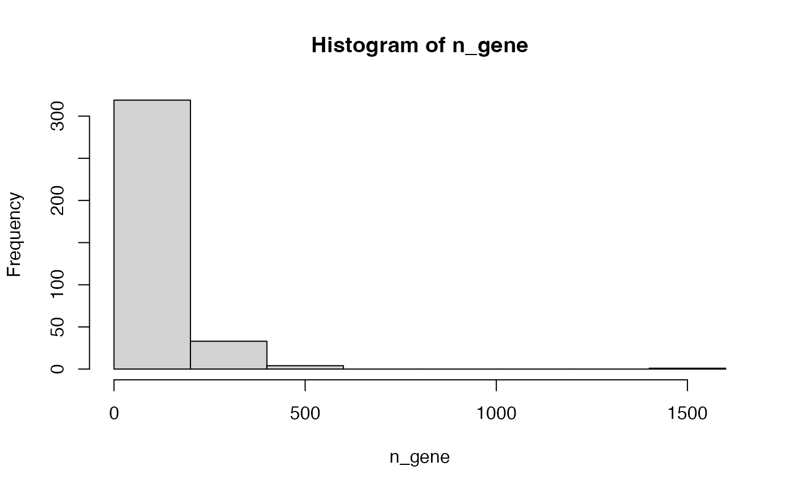
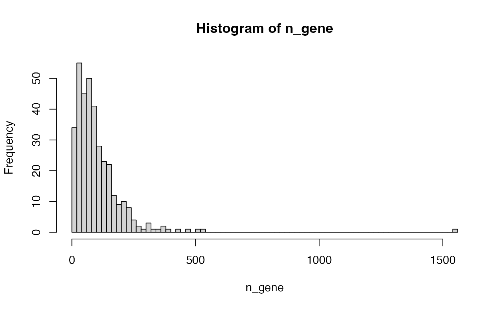

vignettes/topic1_02_kegg.Rmd
topic1_02_kegg.RmdKEGG is a comprehensive database which not only contains pathways but also a large variaty of other information. The entrence of getting KEGG data programmatically is via the KEGG REST API.
Please note the restrictions of using KEGG data (https://www.kegg.jp/kegg/legal.html):
Academic use of KEGG
Academic users may freely use the KEGG website at https://www.kegg.jp/ or its mirror site at GenomeNet https://www.genome.jp/kegg/. Academic users who utilize KEGG for providing academic services are requested to obtain an academic service provider license, which is included in the KEGG FTP academic subscription. The KEGG FTP academic subscription, which is a paid service (see background information), may also be obtained to conveniently download the entire KEGG database.
Non-academic use of KEGG
Non-academic users must understand that KEGG is not a public database and non-academic use of KEGG generally requires a commercial license. There are two types of commercial licenses available: end user and business. The end user license includes access rights to the FTP site and the website, while the business license includes access rights to the FTP site only. Please contact Pathway Solutions for more details.
KEGG provides its data via a REST API (https://rest.kegg.jp/). There are several commands that can be used to retrieve specific types of data. The URL form of the request is
https://rest.kegg.jp/<operation>/<argument>[/<argument2[/<argument3> ...]]To get the KEGG pathway gene sets, we will use the following two operators:
link: get the mapping between two sources.list: get the details of a list of items.The link operator returns the mapping between two sources of information. We can use the following command to get the mappings between genes and pathways for human.
df1 = read.table(url("https://rest.kegg.jp/link/pathway/hsa"), sep = "\t")
head(df1)## V1 V2
## 1 hsa:10327 path:hsa00010
## 2 hsa:124 path:hsa00010
## 3 hsa:125 path:hsa00010
## 4 hsa:126 path:hsa00010
## 5 hsa:127 path:hsa00010
## 6 hsa:128 path:hsa00010In the example, url() constructs a connection object that directly transfer data from the remote URL. You can also first download the output from KEGG into a local file, read it and later delete the temporary file. url() basically automates such steps.
temp = tempfile()
download.file("https://rest.kegg.jp/link/pathway/hsa", destfile = temp)
df1 = read.table(temp, sep = "\t")
file.remove(temp)Also the URL "https://rest.kegg.jp/link/hsa/pathway" returns identical results which only switches the two columns in the table.
In the output, the first column contains Entrez ID (users may remove the "hsa:" prefix for downstream analysis) and the second columncontains KEGG pathways IDs (users may remove the "path:" previx).
## V1 V2
## 1 10327 hsa00010
## 2 124 hsa00010
## 3 125 hsa00010
## 4 126 hsa00010
## 5 127 hsa00010
## 6 128 hsa00010To get the full name of pathways, use the list command:
df2 = read.table(url("https://rest.kegg.jp/list/pathway/hsa"), sep = "\t")
head(df2)## V1 V2
## 1 hsa01100 Metabolic pathways - Homo sapiens (human)
## 2 hsa01200 Carbon metabolism - Homo sapiens (human)
## 3 hsa01210 2-Oxocarboxylic acid metabolism - Homo sapiens (human)
## 4 hsa01212 Fatty acid metabolism - Homo sapiens (human)
## 5 hsa01230 Biosynthesis of amino acids - Homo sapiens (human)
## 6 hsa01232 Nucleotide metabolism - Homo sapiens (human)## V1 V2
## 1 hsa01100 Metabolic pathways
## 2 hsa01200 Carbon metabolism
## 3 hsa01210 2-Oxocarboxylic acid metabolism
## 4 hsa01212 Fatty acid metabolism
## 5 hsa01230 Biosynthesis of amino acids
## 6 hsa01232 Nucleotide metabolismThere is a KEGGREST package which implements a full interface to access KEGG data in R. All the APIs from KEGG REST service are suppoted in KEGGREST. The names of functions in KEGGREST are consistent to the operators in the KEGG API. For example, to get the mapping between genes and pathways, the function keggLink() can be used.
## hsa:10327 hsa:124 hsa:125 hsa:126 hsa:127
## "path:hsa00010" "path:hsa00010" "path:hsa00010" "path:hsa00010" "path:hsa00010"
## hsa:128
## "path:hsa00010"This named vector is not commonly used for downstream gene set analysis. A more used format is a data frame. We can simply converted gene2pathway to a data frame.
df3 = data.frame(
gene_id = gsub("hsa:", "", names(gene2pathway)),
pathway_id = gsub("path:", "", gene2pathway)
)
head(df3)## gene_id pathway_id
## 1 10327 hsa00010
## 2 124 hsa00010
## 3 125 hsa00010
## 4 126 hsa00010
## 5 127 hsa00010
## 6 128 hsa00010Similar as the list operator in KEGG API, keggList() function can be used to retrieve pathway IDs and their names. The function returns a named vector.
## hsa01100
## "Metabolic pathways - Homo sapiens (human)"
## hsa01200
## "Carbon metabolism - Homo sapiens (human)"
## hsa01210
## "2-Oxocarboxylic acid metabolism - Homo sapiens (human)"
## hsa01212
## "Fatty acid metabolism - Homo sapiens (human)"
## hsa01230
## "Biosynthesis of amino acids - Homo sapiens (human)"
## hsa01232
## "Nucleotide metabolism - Homo sapiens (human)"Users may want to highlight some genes on the pathway image, e.g. to highlight differentially expressed genes. The function color.pathway.by.objects() in KEGGREST accepts a vector of genes and assigns them with a set of colors. In the following example, I randomly pick 10 genes from the pathway “hsa04911”. It does not work any more because KEGG has changed its API.
Let’s manually color genes for a specific pathway on KEGG web site.
Open https://www.genome.jp/pathway/hsa04911.
genes = names(gene2pathway[gene2pathway == "path:hsa04911"])
diff_genes = sample(genes, 10)
settings = data.frame(
genes = diff_genes,
colors = paste0(rep("orange", 10),",",rep("blue", 10)) # background,labels
)
write.table(settings, file = stdout(), row.names = FALSE, col.names = FALSE, quote = FALSE, sep = "\t")hsa:6514 orange,blue
hsa:775 orange,blue
hsa:2776 orange,blue
hsa:6833 orange,blue
hsa:139760 orange,blue
hsa:114 orange,blue
hsa:6513 orange,blue
hsa:886 orange,blue
hsa:3781 orange,blue
hsa:5864 orange,blueHow to set gene colors: https://www.genome.jp/kegg/webapp/color_gui.html
The package ggkegg also supports customizing KEGG graph.
The second Bioconductor pacakge clusterProfiler has a simple function download_KEGG() which accepts the prefix of a organism and returns a list of two data frames, one for the mapping between genes and pathways and the other for the full name of pathways.
lt = clusterProfiler::download_KEGG("hsa")
head(lt$KEGGPATHID2EXTID)## from to
## 1 hsa00010 10327
## 2 hsa00010 124
## 3 hsa00010 125
## 4 hsa00010 126
## 5 hsa00010 127
## 6 hsa00010 128
head(lt$KEGGPATHID2NAME)## from to
## 1 hsa01100 Metabolic pathways
## 2 hsa01200 Carbon metabolism
## 3 hsa01210 2-Oxocarboxylic acid metabolism
## 4 hsa01212 Fatty acid metabolism
## 5 hsa01230 Biosynthesis of amino acids
## 6 hsa01232 Nucleotide metabolismNote: all the methods we introduced can not be used to retrieve the network data from KEGG.
In the previous example, we obtained the mapping between genes and KEGG pathways for human, using the organism code of "hsa". Since human is very well-studied and everyone knows "hsa" is for human, what if you are studying dogs? Try to find out the organism code for dog and get the gene-pathway mappings for dog.
Hint: use the list operator in KEGG API and search for dog.
You can get organism codes for all organisms by https://rest.kegg.jp/list/organism. Then you will find the code for dog is "cfa". Use one of the following three ways to download the data.
df = read.table(url("https://rest.kegg.jp/link/pathway/cfa"), sep = "\t")
pathway2gene = KEGGREST::keggLink("pathway", "cfa")
lt = clusterProfiler::download_KEGG("cfa")Make the distribution of the numbers of genes in KEGG pathways (for human).
There is a pathway that contains far more genes than all other pathways. What is the pathway ID of it and what is its full name? Go to the web page of this largest pathway to see its real structure.
df1 = read.table(url("https://rest.kegg.jp/link/pathway/hsa"), sep = "\t")
n_gene = table(df1[, 2])
hist(n_gene)
Making the intervals smaller is better:
hist(n_gene, nc = 100)
The largest pathway:
which.max(n_gene)## path:hsa01100
## 86Its name:
df2 = read.table(url("https://rest.kegg.jp/list/pathway/hsa"), sep = "\t")
df2[df2[, 1] == "hsa01100", ]## V1 V2
## 1 hsa01100 Metabolic pathways - Homo sapiens (human)And its url on KEGG: https://www.genome.jp/pathway/hsa01100.
Highlight the following genes “5527”, “7534”, “2033”, “1111”, “5885” on the pathway image of “Cell cycle”. Choose colors you like.
df2 = read.table(url("https://rest.kegg.jp/list/pathway/hsa"), sep = "\t")
df2[, 2] = gsub(" - Homo .*$", "", df2[, 2])
pathway_id = df2[df2[, 2] == "Cell cycle", 1]
pathway_id## [1] "hsa04110"Prepare the color table:
5527 red,blue
7534 blue,red
2033 yello,darkgreen
1111 grey,red
5885 purple,blueThen go to https://www.genome.jp/pathway/hsa04110 and paste the color table there.